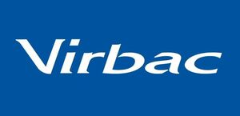

Trade Mark Journal No.2025/029 18 July 2025
WO0000001862129 (3,5,10,31)
Office of origin: France
Date of International Registration:6 March 2025
Date of designation in the UK:
6 March 2025

International priority date claimed: 4 March 2025
(France)
(5126319)
- Class 3
- Lotions for the skin of animals; hygienic products and cosmetic products for animals; grooming products for animals; shampoos for animals; dental care products for animals; skin care products for animals; breath freshening products for animals; non-medicated dentifrices for animals; hair preparations, hair lotions, including for animals; non-medicated soaps for animals; essential oils, non-medicated lotions for animals; deodorants for animals; perfumery products.
- Class 5
- Veterinary products; veterinary preparations and substances; veterinary vaccines; antibiotics for veterinary use; disinfectants for veterinary use; medicines for animals; animal skin treatment for veterinary use; lotions for veterinary use; pharmaceutical products for veterinary use; pharmaceutical preparations for animal skin care; vitamins for animals; food stimulants for animals; food additives for veterinary use; dietetic substances and foods for veterinary use; food supplements for animals; food supplements for pets in the form of treats; additives intended for animal nutrition; hygienic preparations for veterinary use; sanitary products for animals for veterinary use; bacterial preparations for medical or veterinary use; biochemical preparations for veterinary use; bacteriological preparations for veterinary use; chemical preparations for veterinary use; anti-infective products for veterinary use; nutraceutical products for veterinary use; lubricants for medical or veterinary use; animal washing products [insecticides]; insecticidal shampoos for animals; animal flea powders; flea collars for animals; products for destroying vermin; preparations for destroying weeds and vermin, fungicides, herbicides; antiparasitic collars for animals; veterinary substances for ovulation control and regulation; hormonal veterinary products for inducing temporary sterility in animals; antiseptics with therapeutic effect for animals; therapeutic food supplements for animals; therapeutic creams for medical use for animals; topical gels for medical or therapeutic use for animals; nutraceuticals for therapeutic use for animals; nutraceutical preparations for therapeutic or medical use for animals; therapeutic bath preparations for veterinary use; therapeutic medicated bath preparations for veterinary use; agents and medicines for therapeutic use for animals; chemical preparations for therapeutic use for animals; chemical products for therapeutic use for animals; nutritional and dietetic supplements for stress relief for animals; pain relief creams for animals; pain relief preparations for animals; transdermal patches used for pain relief treatment for animals; products, namely, oils, nutraceuticals and creams, for medical use intended for pain relief, relaxation, stress and fatigue reduction, maintenance of general health and well-being, relieving anxiety and improving sleep for animals; veterinary products, namely, joint supplements for animals; veterinary preparations for improving and supporting joint function and mobility in pets; joint supplements for animals; nutraceutical preparations for veterinary use to improve and support joint function and mobility.
- Class 10
- Veterinary apparatus and instruments; medical instruments for veterinary use; apparatus and instruments for veterinary diagnosis particularly for testing for the presence or absence of animal diseases; surgical equipment and instruments for veterinary use; castration instruments for veterinary use; contraceptive implants for animals; artificial insemination apparatus for animals; automatic medical apparatus for injection of doses to animals; pliers for veterinary use; gloves for veterinary use; tubes for veterinary use; collars for therapeutic use for animals; washing apparatus for therapeutic use for animals; therapeutic garments for animals; hot-air therapeutic apparatus for animals; therapeutic weighted blankets for animals; oxygen inhalers for therapeutic use for animals; therapeutic facial masks for animals; therapeutic articles and devices for implantation made of synthetic materials for animals; therapeutic devices using heat to provide pain relief for animals; medical apparatus for pain relief for animals; teething rings for relieving dental pain for animals; teething chains for relieving dental pain for animals; sleep aid devices, namely apparatus inducing sleep by diffusing sounds, aromas or light for animals; mobility aid devices for animals; mobility aid apparatus for animals; wheels for pets [mobility aid apparatus]; bandages for joints for animals; orthopedic bandages for joints for animals; joint endoprostheses for animals; orthopedic joint prostheses [implants] for animals; support bands for joints for animals; fasteners for fixing joints for animals; elastic tubular bandages for supporting animal joints; orthopedic implants for animal joints.
- Class 31
- Food preparations for animals; food preparations for aquaculture; animal foodstuffs; strengthening animal forage; meal for animals; biscuits for animals; edible treats for animals; edible chews for animals; edible chew products for animals; digestible chewing bones and bars for pets; chewable products suitable for consumption by domestic animals; animal fattening products; beverages for animals; litter for animals.
VIRBAC